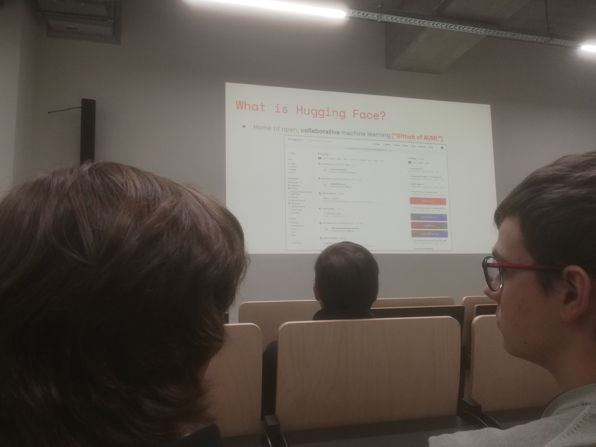
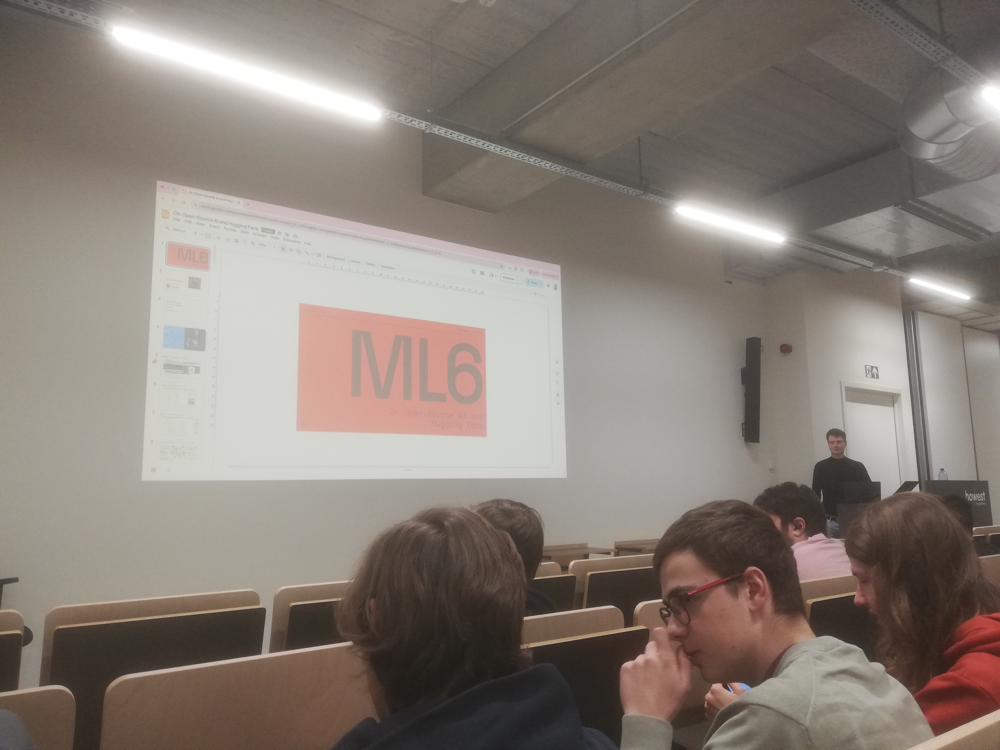
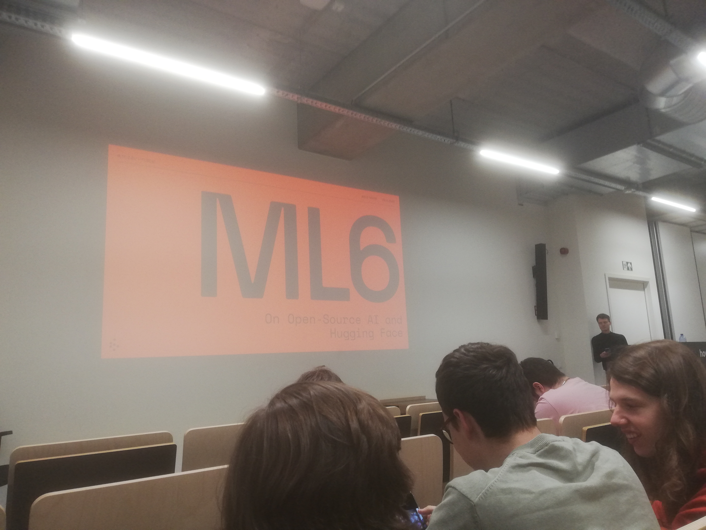
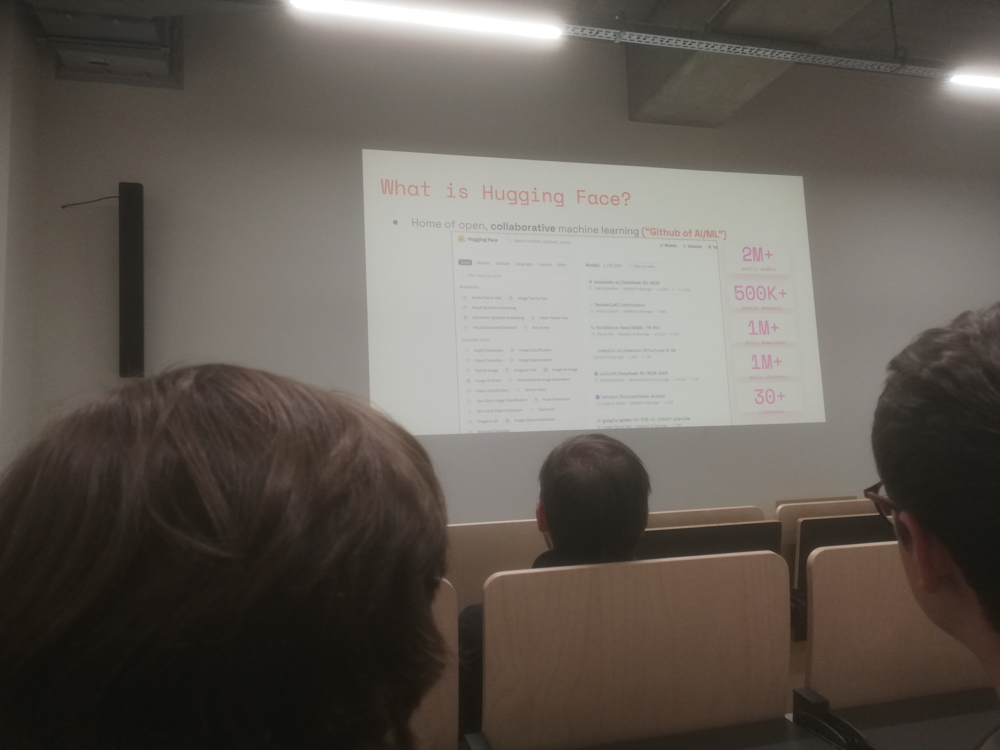
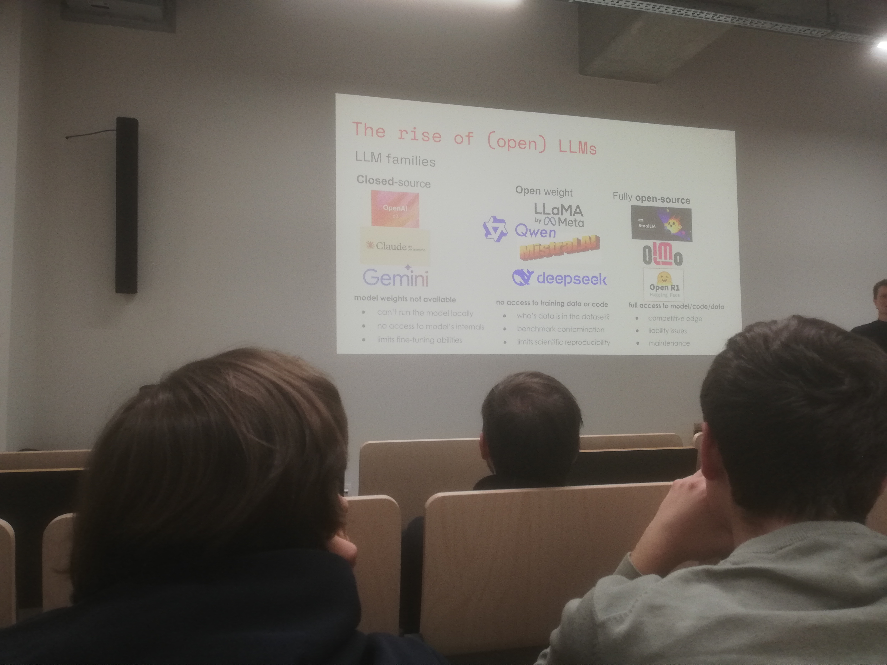
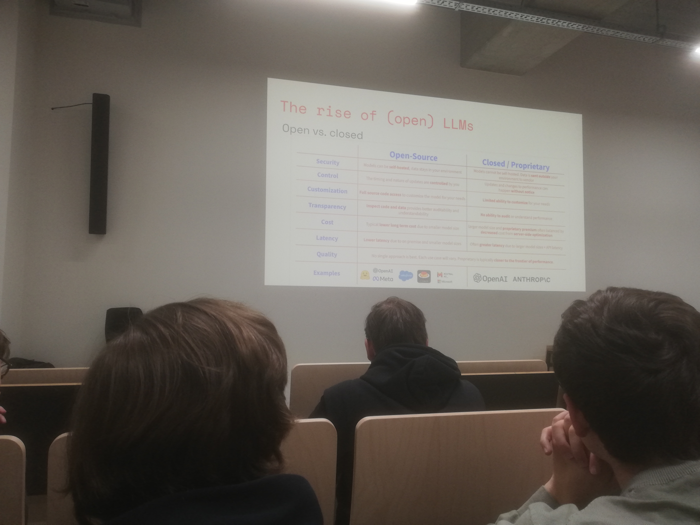
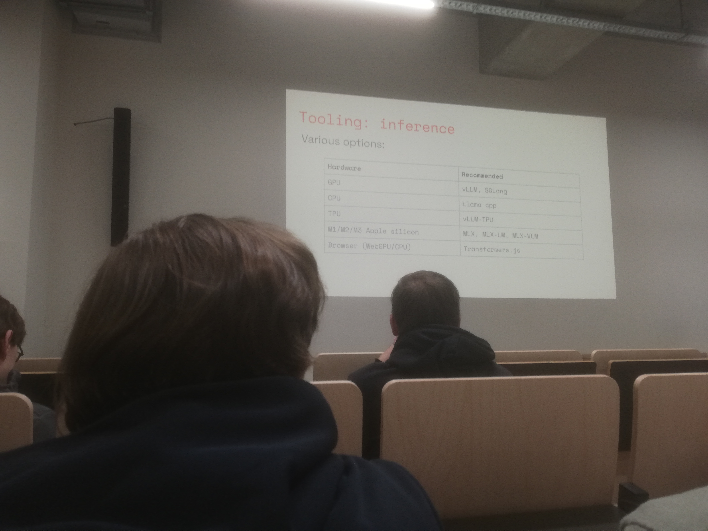

Een enorme dank aan Niels Rogge voor de inspirerende Tech&Meet sessie "Open Minds, Open Models" aan Howest Brugge. Het was een boeiende avond die diep in het snel veranderende landschap van open-source AI dook. Als AI-student zie ik Hugging Face vaak als de "GitHub voor AI-projecten": dé plek waar grote modelbestanden en datasets gedeeld worden, en deze sessie bevestigde dat beeld alleen maar.
Niels, die zowel bij ML6 als bij het open-source team van Hugging Face werkt, deelde zelfs het leuke 'origin story' achter de naam. Wat begon als een emoji-gebaseerde chatbot voor tieners, groeide uit tot een wereldwijd platform toen ze in 2018 een PyTorch-versie ontwikkelden van Google's baanbrekende BERT-model. Dit bleek het fundament voor de Transformers-bibliotheek die we vandaag allemaal gebruiken.
Verschuivingen en Licenties
Een van de meest opvallende inzichten was de geografische verschuiving. Afgelopen zomer werd er voor het eerst meer open-source AI-verkeer en model-uploads waargenomen vanuit China dan vanuit de VS. Dit onderstreept hoe cruciaal open-source is voor wereldwijde technologische soevereiniteit.
Tijdens de sessie leerden we ook dat niet alle 'open' AI hetzelfde is. Er is een essentieel onderscheid tussen Closed Source, Open Weights (waarbij je het model kunt draaien maar de trainingsdata niet hebt) en Fully Open Source. Dit bepaalt hoe transparant en veilig een model is voor professionele implementaties, of je nu kiest voor een serverless deployment of self-hosted beheer.


Van Fine-Tuning naar Vision Models
Er werd nog een belangrijke technische shift besproken: Fine-Tuning. Waar we vroeger standaard de Transformers-library gebruikten om gewichten (weights) te updaten, is er nu Unsloth. Dit is nieuwer, sneller en simpelweg beter voor het aanpassen van modellen aan specifieke taken. Daarnaast zagen we de opkomst van VLMs (Vision Language Models), die een stap verder gaan dan de traditionele LLMs door beelden direct te kunnen 'begrijpen'.
De sessie zat boordevol concrete voorbeelden van baanbrekende projecten die aantonen dat er voor elke AI-enthousiasteling wel iets te vinden is op Hugging Face:
- SmolLM: Lichtgewicht modellen die aantonen dat krachtige AI ook lokaal (on-device) kan draaien.
- Flux: De indrukwekkende projecten van Black Forest Labs op het gebied van beeldgeneratie.
- LeRobot: Een open-source robotica-alternatief voor bijvoorbeeld Tesla's Optimus, wat hardware-innovatie toegankelijker maakt.
AI-Agents en Veiligheid
Een ander fascinerend thema was dat van AI-Agents. De structuur is in essentie: Input -> LLM ( <-> Tools ) -> Output. Een agent beslist autonoom welke tools (zoals de Jupyter Agent voor data science) hij inzet. Niels drukte ons echter op het hart: gebruik voor agents altijd een sandbox om ongewenste interacties met je systeem te voorkomen.




Voor wie niet weet waar te beginnen: Niels tipte huggingface.co/learn als hét vertrekpunt. Het was een fascinerende avond die mijn passie voor open-source AI alleen maar heeft vergroot.
Bekijk ook mijn originele post en de discussie op LinkedIn:
Bekijk op LinkedIn